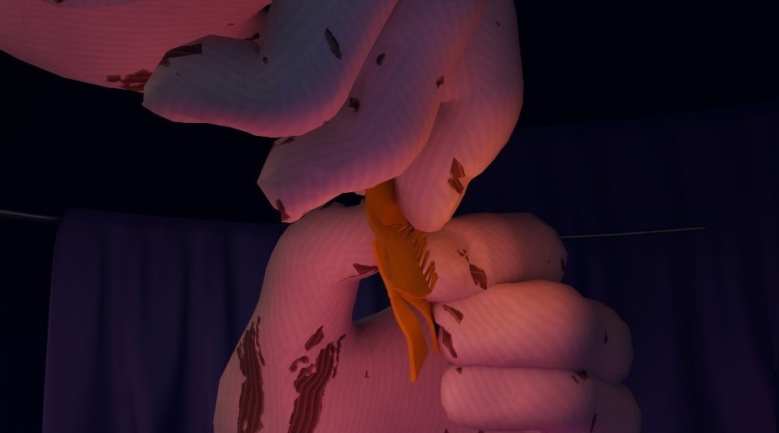

About David & Jay
Directors： An Li Chen, Chang Shao hsuan, Hong Ci Zhen, Lin Yu Huei
David & Jay 是兩部結合虛擬實境技術與動畫敘事的實驗影集。故事以兩位角色的交錯視角展開，帶領觀眾穿梭於兩位主角的故事之間，挑戰感官邊界。
2025 暑假即將上映！！
Directors： An Li Chen, Chang Shao hsuan, Hong Ci Zhen, Lin Yu Huei
David & Jay 是兩部結合虛擬實境技術與動畫敘事的實驗影集。故事以兩位角色的交錯視角展開，帶領觀眾穿梭於兩位主角的故事之間，挑戰感官邊界。